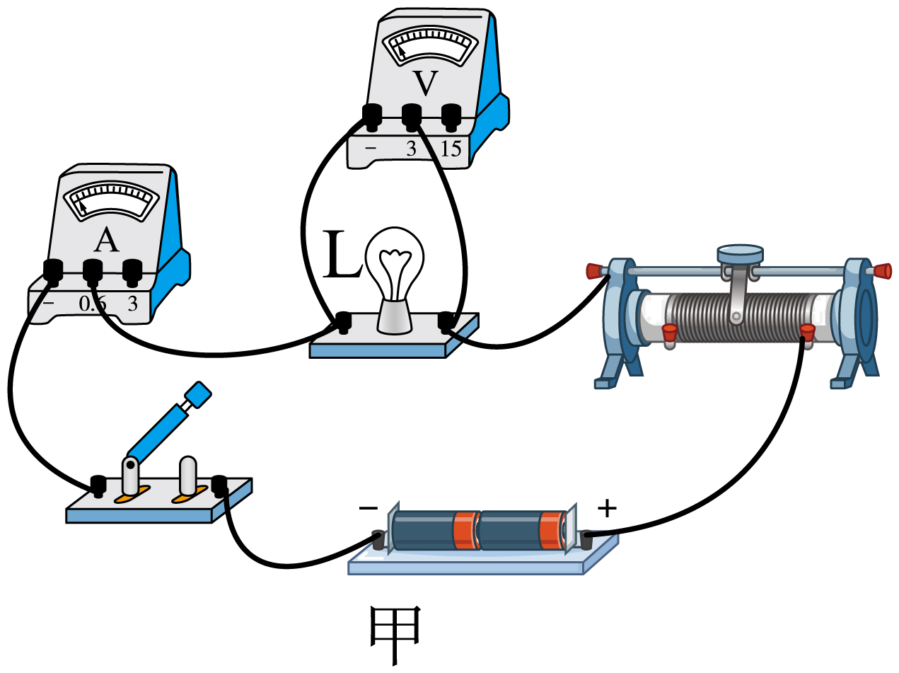
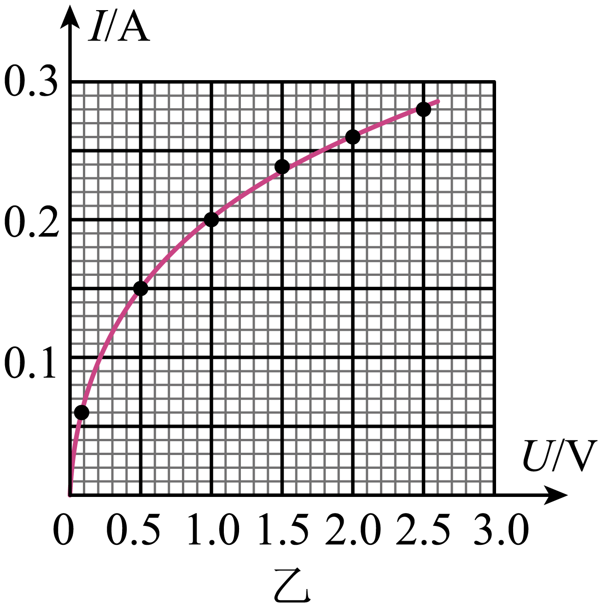
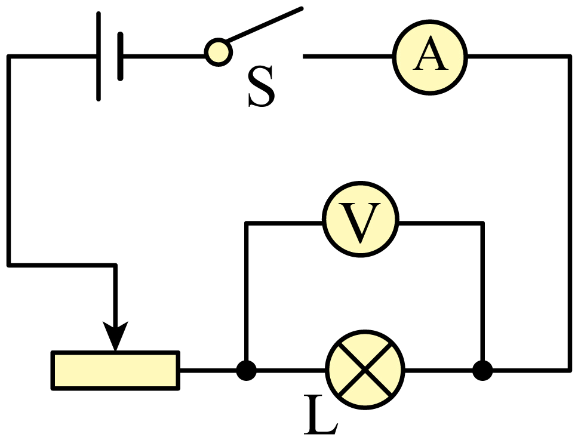
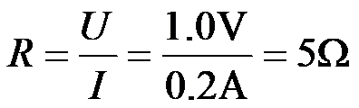
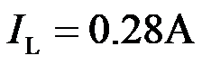
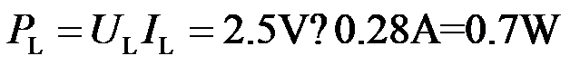

2023年北京中考物理 第27题 解析
27. 小京利用图甲所示电路获取了额定电压为2.5V的小灯泡L在不同电压下的电流，并利用所测的数据绘制出电流I随其两端电压U变化的图像，如图乙所示。
（1）画出实物电路所对应的电路图；
（2）求小灯泡两端电压为1.0V时的电阻；
（3）求小灯泡正常发光时的电功率。


【答案】（1）

；（2）；（3）【解析】
【详解】解：（1）由实物图可知，灯泡与滑动变阻器串联，滑动变阻滑片向右移动时，接入电路的阻值变小，电压表测灯泡两端电压，电流表测电路中，电路图如下图所示：
（2）由图像可知小灯泡两端电压U=1.0V时，通过小灯泡的电流I=0.2A，此时小灯泡的电阻

（3）小灯泡正常发光时，两端电压，由图像可知此时通过小灯泡的电流

，小灯泡正常发光时的电功率
答：（1） ；
（2）小灯泡两端电压为1.0V时的电阻为5Ω；
（3）小灯泡正常发光时的电功率为0.7W。